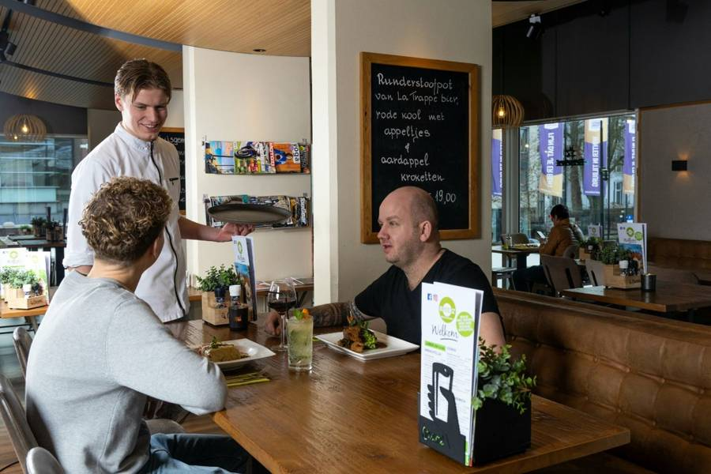
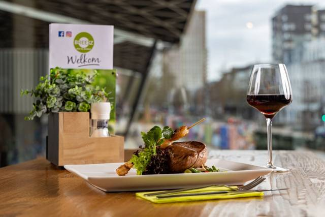
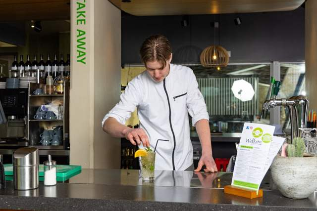

Restaurant op Station Tilburg, sinds 2004
Eerst goed eten,
dan pas de trein.
Waar smaakvol eten en gastvrijheid samenkomen. Elke dag vers uit onze eigen keuken, met uitzicht op het spoor. Uitgebreid dineren of snel een hapje: het kan allebei.

Dagschotel € 14
Elke dag een nieuwe dagschotel, gemaakt met de meest verse ingrediënten van het seizoen. Wat de chef vandaag heeft bedacht? Dat hoor je aan tafel, of bel even: 013 542 52 55.
En dat voor een eerlijk prijsje. De dagschotel kun je ook meenemen.


Trein over vijf minuten? Neem het mee.
Zin in een gezonde maaltijd voor onderweg, of thuis lekker eten zonder te koken? Kom een van onze verse gerechten afhalen. Onze noedels en pasta zitten boordevol verse groenten, en omdat je ook onderweg goed moet eten zijn de porties lekker groot.
Moet je snel de trein of de bus halen? Binnen 3 minuten staat het voor je klaar. Ook onze huisgemaakte soepen en de dagschotel kun je meenemen.

10–100
Met je groep uit eten in Tilburg? Wij regelen het.
Lunch met collega's, diner met familie of een borrel met je team: bij Breexz schuif je met 10 tot 100 personen aan, pal naast Tilburg Centraal. Vers uit eigen keuken, alles op maat en één aanspreekpunt.
Van 10 tot 100 personen
Klein gezelschap of volle zaal, wij richten het in op jullie groep.
Lunch, diner of borrel
Kies jullie moment. Wij stellen het menu samen dat bij jullie past.
Snel geregeld
Eén telefoontje of mail en je hebt een voorstel op maat.
Catering
Liever eten van Breexz op je eigen locatie? Vraag naar de cateringmogelijkheden.
Sinds 2004 een begrip in Tilburg
Breexz is dé plek voor liefhebbers van goed eten en gezelligheid, met een uniek uitzicht op het station. Onder leiding van chef-kok Michiel Spierings en zijn vrouw Inese verwelkomen we je zeven dagen per week. Of je nu uitgebreid wilt dineren of snel een hapje eet voordat je de trein neemt: bij ons ben je aan het juiste adres.
Onze keuken serveert dagelijks verse, internationale gerechten. Van gezonde pasta's en noedels tot huisgemaakte kipsaté en gegrilde biefstuk. Alles is ook beschikbaar voor take away. Kom langs en ervaar het zelf, we verwelkomen je graag met een glimlach.
Vers & gezond
Gezond, snel en vers. Dagelijks verse pasta, noedels, dagschotels en meer uit onze ambachtelijke keuken.
Werkplek
Een moderne en rustgevende plek om te werken, alles wat je nodig hebt op één centrale locatie.
Uitkijken op bussen en treinen
Rustig zitten terwijl buiten de bussen en treinen af en aan rijden. Goed bereikbaar met het ov, en op 5 minuten lopen kun je voordelig parkeren.
Het perfecte begin of einde van een dagje Tilburg: combineer het Natuurmuseum, De Pont of het Textielmuseum met een lunch of diner bij ons. Of maak je avond compleet na Schouwburg, Concertzaal, Poppodium 013 of Pathé.
Gasten over hun ervaring
Heerlijk geluncht bij Breexz op het station van Tilburg. Ideaal gelegen voor reizigers met de bus of trein. Mijn kroketten met brood waren mooi opgemaakt met extra toebehoren en dat voor een zeer redelijke prijs. Vriendelijke bediening.
Ad van Peer
Mooie locatie, al loop je er zo voorbij (onderdoor eigenlijk), flinke porties voor een prima bedrag. Snelle en vriendelijke bediening. Een aanrader voor eenieder die in de buurt van het station komt en een (half) uurtje wil overbruggen. Eet smakelijk!
Thijs van Ham
Ik had zelf een maaltijdsalade gamba's besteld en eerlijk gezegd was dit één van de beste salades die ik heb gegeten in een restaurant. Goed gevuld en heerlijk van smaak. Er zijn nog heel veel andere opties qua eten ook. Een aanrader voor iedereen.
Anne van Yperen
Kom langs op Spoorlaan 47
BreexzSpoorlaan 47
5038 CB Tilburg
013 542 52 55
info@breexztilburg.nl
Openingstijden
Maandag t/m zondag
11:00 – 21:00